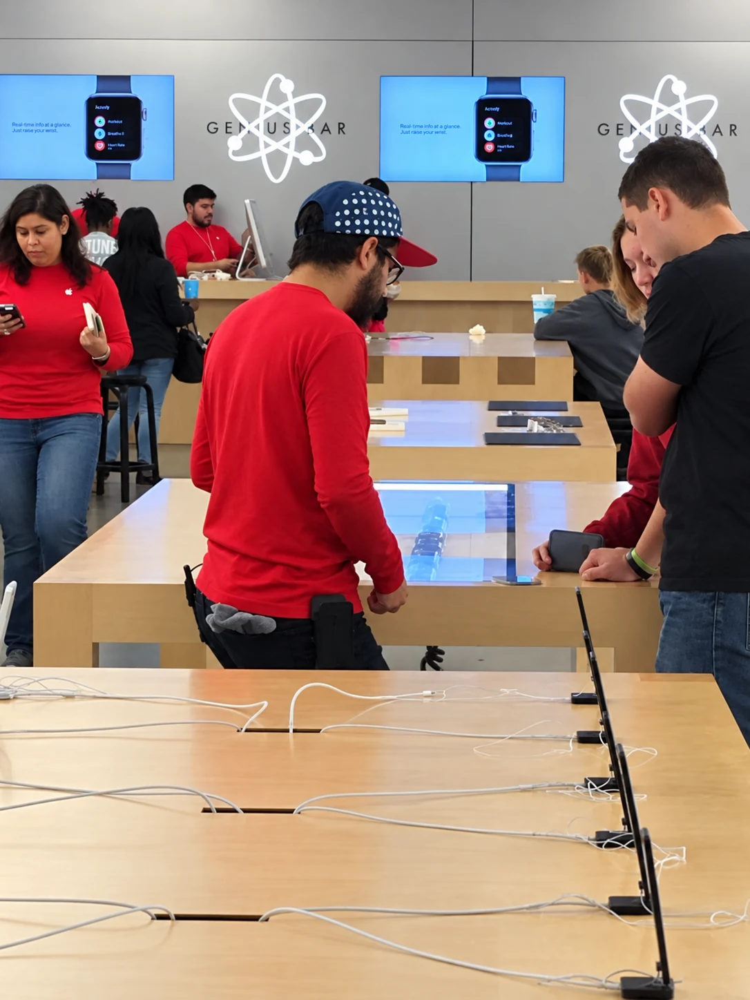
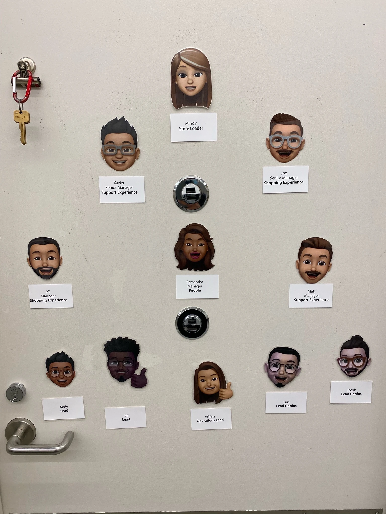

Apple, Retail at Home
Period Review
In 2020 I was handed a team of support advisors working from their homes, most of them from the sales floor. This is my review of that team: what was holding it back, what I taught, and what my employer’s numbers showed afterward.


- Formal title
- Lead Genius
- Assignment
- Retail Team Lead, temporary
- Period
- August 2020 to March 2021
- Team
- Up to 29 advisors in seven stores
Apple is named as my employer at the time. This is my own retrospective, and Apple has not reviewed or endorsed it.
How each claim is sourced
- Measured
- Produced by an employer’s system or the live platform, not by me.
- Recorded
- My own artifacts, written at the time: plans, trackers, curriculum.
- Recalled
- My account, told now.
- Illustrative
- Invented demo data or a recreation, shown to explain how something works.
The period at a glance
| Measure | Better when | Team against site, average | Periods ahead |
|---|---|---|---|
| Customer-facing time | Higher | +11.1 points | 4 of 4 |
| Issue resolution | Higher | +7.4 points | 4 of 4 |
| Customer satisfaction | Higher | +4.2 points | 4 of 4 |
| Handle time | Lower | 2.3 min faster | 4 of 4 |
- 29advisors on my roster at its largest
- 7stores, in two time zones
- 14store leaders and experience managers to keep informed
- 34onboarding steps across about fifteen systems, which I ran but didn’t write Recorded
The team
When stores closed in March 2020, I was sent home like everyone else. By April and May I was taking technical support calls from home, alongside other Geniuses and Lead Geniuses. When the at-home program opened up, I was given a team of my own. Recalled
Most of my advisors came from the sales floor. Nearly two-thirds had never supported the products at this technical level. Recorded They knew customers and they knew the stores. What they needed was a way to diagnose a problem over the phone and finish the call with it solved.
They were spread across seven stores and two time zones, and every store still had a leader and an experience manager who wanted to know how their people were doing. I kept reporting to my own store managers the whole time, while remote managers watched and coached the team too. For eight months I answered to both. Recalled
What was holding the team back
Satisfaction was the number everyone watched, and on my team a handful of advisors were pulling it down. When I lined satisfaction up against issue resolution, the pattern was plain. Every advisor below 80% satisfaction was also below 72% issue resolution. There were five of them. Recorded
That changed the coaching conversation. Telling someone to be friendlier on the phone doesn’t help much. Teaching them to finish the job on the call does, and it can be practiced.
Figure 1. Satisfaction against issue resolution
- Below both
- Everyone else
- Threshold
What is real in this figure
| Quantity | Value | Source |
|---|---|---|
| Satisfaction threshold | 80% | My business plan |
| Issue resolution threshold | 72% | My business plan |
| Advisors below both | 5 | My business plan |
| Dot positions and the other seven dots | None | Invented for this figure |
- 6versions of the call-handling course
- 24fields tracked for every advisor
What I taught
The fix had to work for people who had been selling products a few months earlier. I wrote it down, taught it, checked it advisor by advisor, and handed parts of it to the team.
A course, six drafts deep
I wrote a call-handling course aimed at the behaviors behind both numbers. The version I kept is the sixth. It follows a call through three stages: the start of the call, the first round of troubleshooting, and the deeper probing when the first answer doesn’t solve it. Each stage is taught twice, first as a principle, why the step matters, and then as behaviors, the actual words an advisor can use on their next call. Every behavior is tied to the number it moves. Recorded
- 01Start the call
Understand what the customer has already tried.
- 02Troubleshoot
Work through the first round of the problem.
- 03Probe deeper
Ask the next question when the first answer isn’t enough.
A few of the lines I wrote for advisors to use:
- “Outside of contacting me today, what have you already tried to resolve this?”
- “Ok so you stated that ____, can you take me a little further into that?”
- Summarize the fix before the call ends. It reminds the customer what was solved, and it sets up the survey question they get afterward: was your issue resolved?
The course opened by looking again at one word. Resolving an issue sounds like fixing it. It can also mean reaching a firm decision, and on a support call that is the part an advisor can control every time: agreeing with the customer on what happens next.
The course came with a plan around it. My business plan named the behavior to coach, gaining the customer’s agreement on the resolution before the call ends, and set goals on product knowledge and case logging. I checked progress by observing calls for every advisor who had a goal. Each week I recognized the top three on the team and showed how we compared with the other teams in the organization. Recorded
Coaching I could check
My roster tracker held 24 fields for each advisor: access and equipment, training sessions with dates, one-on-ones, and a coaching goal in plain language. Every goal came with how I would check it, whether that was a quality review, a live call I sat in on, or a session shadowing someone stronger. It was the same shape as my business plan, cause then action then measure, applied to one person at a time. Recorded
Handing the teaching to the team
When case logging and compliance needed work, I didn’t run those sessions myself. Two advisors who were among my strongest on issue resolution and satisfaction led the workshops. I set the targets in advance: logging from 66% to at least 80%, and compliance from 87% to above 90%. Logging finished at 88.7% and compliance at 98.11%. Recorded Other things changed over the same stretch, so I don’t give the workshops all the credit.
Getting my replacement ready
Our store wanted more women in leadership, and the road there ran through the Genius role. Late in 2019 I took on four Technical Experts preparing for their Genius interviews, three women and one man. They had the skills. What they needed was a way to show how they think.
So we started with them as people. The interview cared less about how a story ended than about how someone worked through it and what they learned from it. We found those stories first, then ran mock interviews and refined them until each person could tell theirs in their own voice. They were promoted.
A month or two later I was promoted to Lead Genius. My manager told me that when the Genius interview asked who had inspired them to become a Genius, mine was the name that came up most. It taught me the rule I have worked by since: the way up is to have someone ready to take your place. Recalled
The workshops on the remote team were the same habit at a different scale. Find the person who is already good at something, give them room to teach it, and the team keeps running without you. Recalled
- 85.49%team customer-facing time in December, against an organization average of 79.98% for iOS and 81.06% for Mac across 82 advisors Measured
What the scorecard said
My employer’s trackers set the team’s results for each fiscal period beside the site benchmark. In each of the four full periods I led the team, November through February, the team was ahead on all four measures. Measured
The widest gap was customer-facing time, the share of a shift spent actually helping customers. Weekly results didn’t always beat the site. I show the period rollups because that is how the results were reported.
Figure 2. My team against the site benchmark
- My team
- Site benchmark
Customer-facing time
Percent of shift, higher is better
Issue resolution
Percent, higher is better
Customer satisfaction
Percent, higher is better
Handle time
Minutes per call, lower is better
All sixteen comparisons
| Period | Customer-facing time | Issue resolution | Satisfaction | Handle time (min) |
|---|---|---|---|---|
| Nov 2020 | 87.06 / 73.27 | 72.14 / 67.69 | 83.64 / 82.26 | 15.09 / 20.29 |
| Dec 2020 | 85.49 / 74.28 | 79.31 / 67.54 | 88.95 / 82.72 | 18.07 / 20.42 |
| Jan 2021 | 86.31 / 74.76 | 74.49 / 66.70 | 87.85 / 81.49 | 19.54 / 20.24 |
| Feb 2021 | 81.34 / 73.45 | 73.49 / 67.79 | 85.41 / 82.58 | 19.01 / 19.90 |
| Average gap | +11.1 points | +7.4 points | +4.2 points | 2.3 min faster |
Team first, site second.
Two records that agree
During the assignment I prepared notes for a development day, with my own summary of team against site. I wrote it for a different purpose, apart from the trackers. Set side by side now, the site figures in my note sit within two points of the tracker’s December and January rollups, and my team figures land inside or just above the tracker’s range. Recorded Measured Two records, kept for different reasons, telling the same story.
Figure 3. My note against the tracker
- My note
- Tracker, December and January
- Team
- Site
The figures behind it
| Measure | My note, team / site | Tracker, Dec, team / site | Tracker, Jan, team / site |
|---|---|---|---|
| Customer satisfaction | 90 / 81 | 88.95 / 82.72 | 87.85 / 81.49 |
| Issue resolution | 78 / 67 | 79.31 / 67.54 | 74.49 / 66.70 |
| Customer-facing time | 86 / 75 | 85.49 / 74.28 | 86.31 / 74.76 |
Closing it down
By early 2021 the program was winding down and advisors were heading back to their stores. In my business plan for the final period, written before it began, I said what I expected.
“I will have 5 advisors going into the next period but I expect to absorb more as RTLs exit the program … I do anticipate to see a drop in my CSAT because of higher performers leaving the program, but would be happy to maintain an 80%, Issue Res. of 70%.”
I finished with 8. The period before, my roster had peaked at 29 when I took on another team’s advisors. Recorded Planning for a smaller team, saying in writing what I expected to lose, and setting a floor before anyone asked for one was a different kind of work from growing the team, and I learned as much from it.
Figure 4. Advisors on my roster, and my forecast
- Advisors on my roster
- My forecast
What I can’t show is whether the 80 and 70 floor held. The full-period rollups stop one period before the program did, so the floor stays what it was: a commitment I put in writing.
Before the team
I joined Apple in October 2016 as a part-time Specialist in sales and worked my way through the store’s technical roles. The remote team was a temporary assignment on top of my role as a Lead Genius, and I stayed part of my store the whole time.



Figure 5. Roles held, October 2016 to April 2021
- SpecialistSales, part-time. Oct 2016
- Technical SpecialistFloor technical support. Apr 2017
- Technical ExpertAdds iPhone repair. Oct 2017
- GeniusAdds Mac repair. Mar 2018
- Lead GeniusLeads floor technical support. Feb 2020
- Retail Team LeadTemporary assignment. Aug 2020 to Mar 2021
My wife and I met working at Apple North Star.
A personal photo from those years.
-
A repair room captain
When the iPhone battery replacement program hit, repair volume outgrew the way our repair room worked. I reorganized the repair stations and posted tips and reminders at each one. Then I created an unofficial role, Repair Room Captain, to own the workflow and keep everyone accountable through the surge. The program ran well, and it established me as a leader among my peers. Recorded
-
Disagree, then commit
Our depot utilization was below the 60% goal, and I was told we needed to send more repairs off-site. I disagreed. I took the feedback anyway, worked to understand why it mattered, and came around. I had no authority over the other Geniuses, so I changed the workflow through the trust I had with them: lead with ownership on out-of-warranty repairs, and refer single-part repairs to our sister store. We hit 60% within a week and finished at 70%, the highest in our market team. Recorded
-
Reframing one question
Customers could easily say no to an offer to meet our business team. I changed the ask to connecting them by email, and pointed the team to the field for it that was already on the first page of our repair workflow. A one-line change, and the team reached over 50% business engagement. Recorded
-
A pilot that didn’t last
My store piloted 15-minute express appointments. I took six to eight an hour to show the pace could work. The pilot was dropped after two weeks, but it helped set the multitasking rhythm the store kept using. Recorded
The company later rolled express appointments out more widely. I can’t say how much our pilot had to do with that, but I was there for the early test. Recalled
Notes to the review
- Sources. Period figures are copied from my employer’s performance trackers, which compared my team with the site. The averages are my arithmetic. The business plans, the course, the roster tracker and the development-day note are my own files from the time.
- Cause and effect. The course, the coaching and the workshops were things I led. The records can’t separate their effect from staffing, call mix or anything else that changed, so the results show what happened, not proof of why.
- Headcount. Team size depends on which record you count. I quote my own roster and don’t mix it with other counts.
- What isn’t here. No one’s individual results, no names, no internal identifiers and no internal training material. Where I used a public coaching model such as GROW or SMART goals, I name it; anything that was my employer’s, I describe in my own words.
- Figures I retired. I used to carry a satisfaction-uplift percentage and a revenue figure in my own materials. I couldn’t find a source for either, so they’re gone.